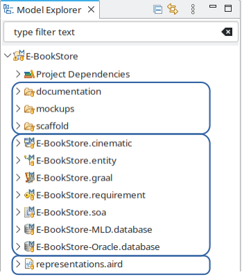
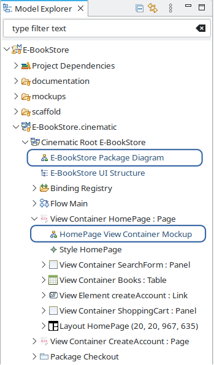
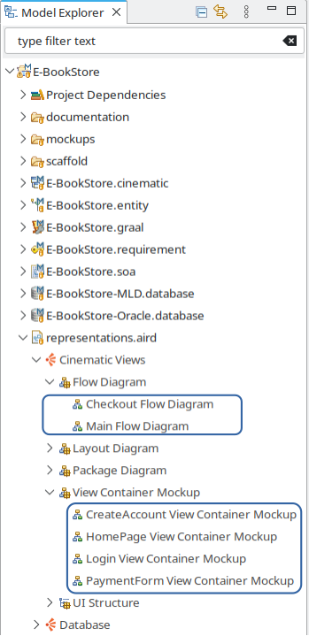

| ISD - Environment tooling | ||
|---|---|---|
|
|
||
| ISD - Outillage environnement | ||
Copyright © 2008, 2025 Obeo - All rights reserved. This program and the accompanying materials are made available under the terms of the Eclipse Public License v2.0
IS-Designer est un studio de conception de systèmes logiciels permettant de capturer le besoin et de décrire l’architecture de systèmes logiciels.
IS-Designer est basé sur le studio de modélisation Obeo Designer, qui apporte la notion de projet de modélisation.
Un projet de modélisation IS-Designer est constitué de dossiers et de ressources. Les dossiers peuvent contenir des ressources, ou d’autres dossiers.
Les ressources peuvent être classées en trois types :

Le projet peut être parcouru suivant deux axes : structure des modèles sémantiques, ou bien types de représentation.
1- Suivant le structure des modèles sémantiques :
Les ressources sémantiques peuvent être dépliées de manière à laisser apparaître une structure arborescente sur les modèles. Lorsqu’une représentation existe pour un élément de modèle donné, celle-ci est présentée sous l'élément en question. Un double clic dans le Model Explorer permet d’ouvrir la représentation.
Même si elle sont présentées sous des éléments du modèle sémantique, les représentations ne sont pas persistées dans le modèle sémantique mais dans la ressource aird.

2. Suivant les types de réprésentation :
La ressource aird peut elle aussi être dépliée pour laisser apparaître la structure des points de vue appliqués au projet. Sous chaque point de vue sont énumérés les types de représentations, et sous chacun des types de représentations les représentations elles mêmes. Cette vue peut être utile losque l’on connaît le type de représentation que l’on souhaite consulter sans savoir sur quel élément sémantique il a été défini.

|
|
||
| ISD - Outillage environnement |